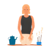

Regulación del estrés en entornos tech
Entiende tu respuesta de estrés, aprende técnicas de regulación rápida aplicables en tiempo real y construye tu protocolo personal.
- El sistema nervioso bajo presión y el eje HPA
- Técnicas de regulación rápida desde el escritorio
- Urgencia real vs urgencia percibida
- Code reviews con ecuanimidad
- El síndrome del impostor y la defusión cognitiva
- Pause before panic: 5 respiraciones al romper algo
- Body scan exprés de 5 min desde la silla
- Minfulnessmeeting: ritual de 2 min antes de reunión
- Tarjeta de emergencia personal
Tu sistema nervioso en el trabajo
2 min · Video + cuestionario
El estrés no es un problema de actitud
Es una respuesta fisiológica. Cuando percibes una amenaza, tu sistema nervioso simpático se activa. Se libera adrenalina y cortisol. El corazón acelera. La respiración se hace superficial.
El prefrontal se apaga
Todo ese protocolo de emergencia está diseñado para correr o pelear. Pero tú necesitas pensar. Y bajo activación alta del sistema nervioso, el acceso al córtex prefrontal — la parte que razona y toma decisiones — se reduce.
Cuando más estrés tienes, menos acceso tienes a la parte del cerebro que más necesitas.
Bugs en producción: regulación de emergencia
2 min · Audio guiado
Esta sesión está diseñada para usarla cuando el estrés ya está activo. Puedes volver aquí siempre que lo necesites.
Paso 1 — Pon los pies en el suelo
Planos. Siente el contacto. El suelo es real. Tú estás aquí. Esta señal física le dice al sistema nervioso que hay un suelo firme bajo ti.
Paso 2 — Exhalación larga
Esto no es relajación, es fisiología. Una exhalación más larga que la inhalación activa el nervio vago y frena el sistema simpático.
Paso 3 — Una sola pregunta
¿Cuál es el siguiente paso más pequeño que puedes dar ahora mismo? Solo ese. El resto puede esperar ese minuto.
Deadlines y la trampa de lo urgente
3 min · Video + plantilla
No todos los deadlines son iguales
Pero tu cerebro los trata como si lo fueran. Hay una diferencia fundamental entre urgencia real y urgencia percibida.
Urgencia real
Hay una consecuencia concreta y objetiva si no se entrega en ese plazo. El cliente pierde dinero. El sistema falla. El contrato se rompe.
Urgencia percibida
Sientes que es urgente, pero si lo examinas con calma, la consecuencia no es tan grave o el plazo no es tan rígido como parece.
Si entrego esto mañana en vez de hoy, ¿qué pasa concretamente? No lo que imaginas. Lo que sabes con certeza.
Code reviews con ecuanimidad
3 min · Audio + ejercicio
Por qué el feedback duele
Recibir feedback en una code review activa los mismos circuitos cerebrales que el rechazo social. No es una metáfora — es neurociencia.
Mi código tiene un bug no es lo mismo que yo soy un mal developer.
— Minfulness TechLa fusión identidad-código
En el momento, el cerebro tiende a colapsar las dos cosas. Separar lo que produces de lo que eres es un acto de higiene mental que requiere práctica.
La próxima vez que recibas un comentario que active algo en ti, antes de responder: tres respiraciones. No para calmarte, sino para crear espacio entre el estímulo y tu respuesta.

Reuniones: mindfulness en tiempo real
2 min · Audio guiado
El coste de las reuniones back-to-back
Cada reunión deja un residuo emocional y cognitivo. Si saltas de una a otra sin transición, llevas ese residuo contigo. La calidad de tu presencia en la segunda reunión es una fracción de lo que podría ser.
Cierra lo que estabas haciendo. No lo minimices: ciérralo. Una señal física de que ese contexto terminó.
Una respiración lenta.
Una pregunta: ¿para qué estoy en esta reunión? ¿Qué puedo aportar? ¿Qué necesito sacar?
La calidad de tu presencia en una reunión es la única variable que puedes controlar en ella.
— Minfulness TechSíndrome del impostor
3 min · Práctica guiada
Estás en buena compañía
El síndrome del impostor es especialmente común en entornos de alta exigencia intelectual como el tech. No es un signo de debilidad — es un efecto de la comparación asimétrica.
Por qué siempre perdemos
Tú conoces tus dudas, tus lagunas, tus momentos de no saber. Del resto solo ves la superficie: sus contribuciones, sus respuestas seguras. Comparas tu interior con el exterior de los demás.
No soy suficientemente bueno.
Estoy teniendo el pensamiento de que no soy suficientemente bueno.
Esa pequeña distancia, aunque parezca trivial, te devuelve agencia. El pensamiento sigue ahí — pero ya no te controla de la misma forma.
— Minfulness TechEl cuerpo en el escritorio
3 min · Audio body scan
Siéntate con la espalda apoyada y los pies en el suelo. No necesitas moverte del escritorio.
Hombros
¿Están levantados hacia las orejas? Es casi universal entre personas que trabajan muchas horas sentadas. Si los tienes levantados, permite que bajen. Solo eso — que la gravedad haga el trabajo.
Ojos y ceño
Han estado enfocando una pantalla a 50 centímetros durante horas. Con los ojos cerrados, nota si hay tensión alrededor de los globos oculares o entre las cejas. Permite que esa zona se suavice.
Muñecas y manos
Las herramientas con las que trabajas. ¿Hay tensión residual después de horas de teclado?

Tu protocolo de regulación personal
2 min · Plantilla + ejercicio
Lo que aprendiste esta semana
Qué pasa en tu sistema nervioso bajo presión. Técnicas concretas para regular en tiempo real. La diferencia entre urgencia real y percibida. Y cómo separar tu identidad de tu código.
Responder al estrés no es lo mismo que reaccionar al estrés. Esta semana aprendiste la diferencia.
— Minfulness TechMódulo 2 completado
Has recorrido todas las sesiones de Regulación del estrés en entornos tech. Puedes volver a cualquier sesión cuando lo necesites.